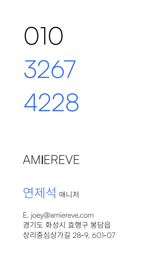
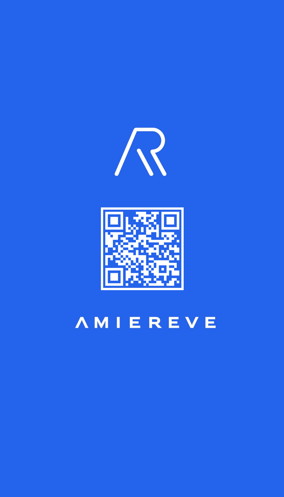

기관 대상 사업 전환 방향 검토
기관이 보유한 수강생에게 필요한 강의를 제공하는 방식으로 사업을 기획했습니다. 강사를 연계하고 커리큘럼을 구성하는 방향을 제안했습니다.
자체 고객 확보에 걸리는 시간을 고려해, 대표의 네트워크로 기관 수강생 대상 강의를 제안하는 방향을 선택했습니다. 현재 제안 단계이며, 시청자 분석을 통한 신규 채널 기획과 홈페이지 / 브랜드 제작도 담당했습니다.
자체 소비자 고객 기반이 없는 상황에서 상품 제작과 고객 확보에 필요한 시간을 고려했습니다. 대표의 네트워크를 활용해 기관에 먼저 제안하고, 기관 수강생에게 필요한 강의를 기획해 강사와 커리큘럼을 연계하는 방향을 선택했습니다.
기존 콘텐츠 업무와 함께 B2G 비즈니스 모델로 전환하는 초기 기획을 진행했습니다. 새로운 방향을 실행해보기 위해 ‘모두의 창업’ 지원사업 신청도 공동으로 주도했습니다.
기관이 보유한 수강생에게 필요한 강의를 제공하는 방식으로 사업을 기획했습니다. 강사를 연계하고 커리큘럼을 구성하는 방향을 제안했습니다.
‘모두의 창업’ 지원사업 신청을 공동으로 주도했습니다. 현재 기관 대상 제안서를 작성하고 제안을 진행하고 있습니다.
유튜브 스튜디오에서 연령과 성별에 따른 시청 유입을 확인했습니다. 40대 이상 남성 비중이 높았습니다. 생리통 / 아이 영양제 등 기존 콘텐츠의 대상과 차이가 있어, 아이를 키우는 엄마인 이미나 약사의 경험을 살린 가족 건강 채널을 별도로 기획했습니다.
유튜브 스튜디오에서 연령과 성별에 따른 시청 유입을 확인하고, 기존 콘텐츠의 주제와 비교했습니다.
가족 건강에 관심 있는 엄마를 새 채널의 기획 대상으로 설정했습니다. 실제 시청자의 육아 여부를 확인한 것은 아닙니다. 이미나 약사의 육아 경험을 살린 ‘건강한가’ 채널을 기획했습니다.
기획안을 작성하고 영상 검수와 업로드를 맡았습니다. 핵심 내용을 반영한 제목과 썸네일도 제작했습니다.
고객과 기존 실적 확보가 중요한 단계라고 판단해, 방문자가 제공 서비스를 이해하고 연락 방법을 쉽게 찾도록 홈페이지의 정보를 구성했습니다.
브랜드 방향과 핵심 메시지를 설정하고 기존 홈페이지의 내용을 검토해 소개 문구와 정보의 순서를 재정리했습니다. 메뉴와 화면을 직접 구성하고 디자인을 정했습니다. AI 도구로 홈페이지를 제작했습니다. 구현된 화면을 확인하고 수정한 뒤 공개했습니다.
브랜드 소개 내용과 전달할 핵심 문구 정리
메뉴와 정보 순서를 정하고 화면 디자인 구성
AI를 활용해 코드를 제작하고 수정한 뒤 홈페이지 공개
브랜드를 표현하는 시각 요소 직접 제작


명함은 제작 당시 ‘매니저’ 직함이 남아 있는 원본입니다. 현재 담당 역할은 기획 총괄 PM입니다.